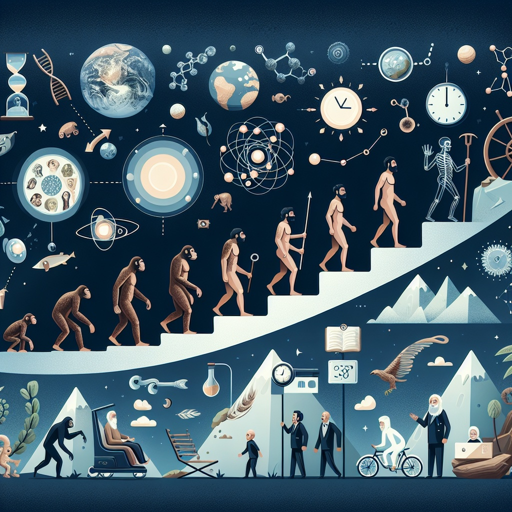

《사피엔스》
목차
작가
유발 하라리
출판일
2011년
감상평에 대한 AI그림
하라리는 우리가 어떻게 오늘날의 문명에 도달했는지, 그 과정에서 겪은 혁명과 선택들이 어떤 방식으로 인간과 사회를 형성했는지를 깊이 있게 탐구한다. 특히 인간의 능동적이고 때로는 파괴적인 본성에 대해 다시 생각하게 만든다. 그는 과학적 사실과 철학적 사유를 결합하여 독자들에게 단순히 과거를 넘어서 지금 우리가 사는 세상의 본질을 질문하도록 유도한다."

감상평에 대한 AI 평가
특히, "우리가 어떻게 오늘날의 문명에 도달했는지"라는 부분은 하라리가 다루고자 하는 주요 질문 중 하나이며, "혁명과 선택들이 어떤 방식으로 인간과 사회를 형성했는지"라는 부분은 《사피엔스》의 중요한 주제인 인류의 진화, 인지 혁명, 농업 혁명, 과학 혁명 등의 역사적 변화를 잘 반영하고 있습니다.
또한, "인간의 능동적이고 때로는 파괴적인 본성"에 대한 언급은 하라리가 인간 본성에 대해 깊이 탐구하는 중요한 부분을 잘 짚고 있습니다. 하라리는 인간이 문명과 기술을 발전시켜 온 과정에서 가진 긍정적인 면뿐 아니라 그로 인한 부정적, 파괴적인 측면도 진지하게 성찰하고 있죠.
마지막으로, "과학적 사실과 철학적 사유를 결합"했다는 부분은 하라리가 이 책에서 과학적 사실을 토대로 다양한 철학적 질문을 던지는 방식을 잘 설명합니다. 독자들이 단순히 과거를 배우는 것을 넘어 현재와 미래에 대해 깊은 사유를 하게 만드는 점이 이 책의 중요한 특징이죠.
결론적으로, 이 감상평은 《사피엔스》의 핵심적인 메시지를 잘 반영하며, 하라리의 접근 방식을 잘 이해하고 있다는 평가를 받을 수 있습니다.